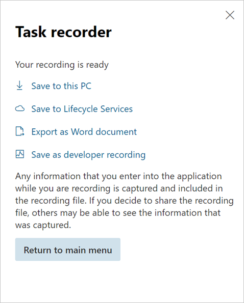

Save task guides to LCS and replay them
Environment details
Microsoft Dynamics 365 Human Resources, which was deployed via Microsoft Dynamics Lifecycle Services (LCS)
Issue
The customer wants to save new task recordings to his or her LCS project, and then replay the saved task guides.
Resolution
Follow these steps to save a task recording to LCS.
Sign in to LCS, and select the project.
Select the Business process modeler tile.
View the page in the "Updated BPM experience."
Select a library, and then select Copy.
Enter a name for the Business process modeler (BPM) model.
Sign in to Human Resources from LCS.
In the Search field, enter help. Lifecycle Services Help is opened.
Select the Refresh button for Lifecycle Services Help configuration.
Your new BPM library should appear, and it should be active.
Close the page.
Create a task recording.
When you've finished, select Save to Lifecycle Services.

Select the BPM library and node to save the task recording to.
Follow these steps to replay a task guide from LCS.
- Start Task recorder.
- Select Open from LCS.
- Select the library and the BPM node that have the saved task guide.
- Open the task guide.